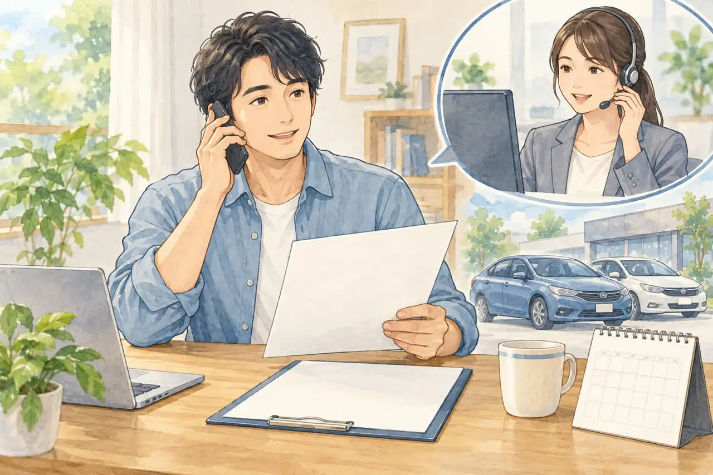
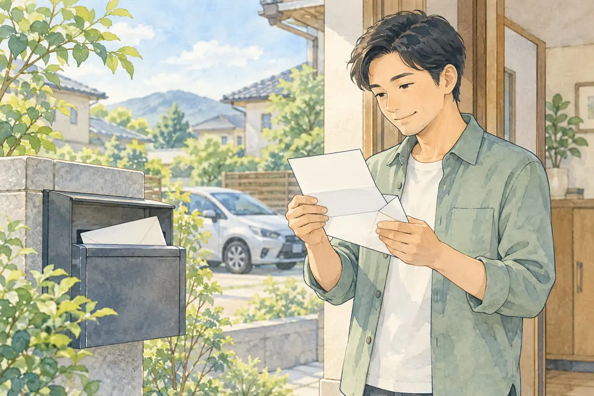
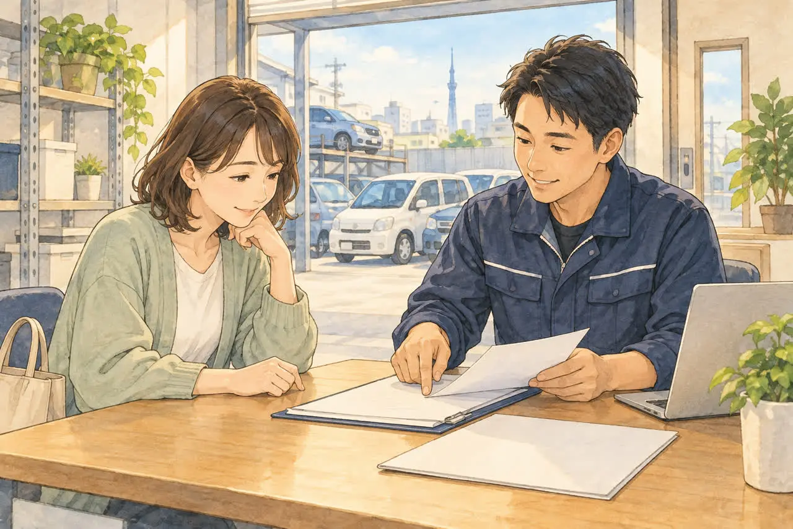

廃車したあとの書類が気になる方へ
廃車したあとに届く書類・残す書類は？
保管しておきたいものと、使い道
公開
こんにちは、東京都足立区江北で自動車解体・廃車買取をしている「大崎商店 環七店」です。
「廃車の手続きが終わったけれど、そのあと何か届くの？」
「渡された書類は、捨てていいの？」
「保険や税金の手続きは、自分でするの？」
廃車の手続きは、運輸支局や軽自動車検査協会での申請が終われば、一区切りです。ただ、そのあとに、届く通知や、保管しておきたい書類があります。
結論からお伝えすると、廃車のあとに大切なのは、次の3つです。
- 自分で保有を続ける普通車を一時抹消した場合は、「登録識別情報等通知書」を大切に保管する
- 自賠責保険・任意保険の手続きは、廃車しただけでは終わらない
- 自動車税の還付などの通知は、あとから届く
この記事では、廃車のあとの書類と、その使い道をやさしくご紹介します。後半では、足立区の大崎商店の場合もご紹介します。
① 廃車の種類で、手元に残るものが違います

普通車の廃車手続きには、一時抹消登録と永久抹消登録などがあります。軽自動車では、一時使用中止・解体返納・解体届出などの手続きを行います。どちらで手続きをしたかで、手元に残る書類が変わります。くわしくは、「一時抹消」と「永久抹消」の違いをやさしく解説｜廃車はどちらを選ぶ？の記事をご覧ください。
| 手続き | 手元に残る・届くもの | 使い道 |
|---|---|---|
| 一時抹消（普通車） | 登録識別情報等通知書（所有者に交付） | 車を再び使う、解体する、輸出する、所有者を変える、ときの手続き |
| 永久抹消・解体届出（普通車） | 依頼先から渡される書類（種類は依頼先によって異なります） | 保険の解約や、還付の確認など |
| 軽自動車（一時使用中止） | 自動車検査証返納証明書（交付を受ける場合） | 再び車を使うときなどの手続き |
| 軽自動車（解体返納・解体届出） | 依頼先に確認する完了確認書類 | 保険の解約や、還付の確認など |
※行政等が交付する書類と、依頼先からお客様へ渡される書類は分けて考えましょう。買取・売却の場合は、原本を新しい所有者や依頼先へ引き継ぐことがあります。自分の保管用にどの控えを受け取れるか、保険会社等への提出は原本・コピーのどちらが必要かを事前に確認してください。
② 一時抹消なら、「登録識別情報等通知書」を保管します
一時抹消をした普通車では、「登録識別情報等通知書」が交付されます。以前の「一時抹消登録証明書」に代わる書類です。自分で車を保有し続ける場合は原本を保管し、売却する場合は原本の引き継ぎ方法を依頼先に確認してください。
この通知書は、あとで次の手続きをするときに、提出書類として必要になります（北陸信越運輸局・解体届出・東北運輸局・輸出に関する手続きなど）。
- 解体届出：一時抹消した車を解体したとき
- 輸出の届出：車を輸出するとき
- 所有者の変更の記録：一時抹消中に、車の所有者が変わるとき
- 再び車を使う（再登録）とき
なくしてしまうと、手続きが面倒になります。車の手続きがすべて終わるまで、大切に保管しましょう。なくした場合の扱いは、管轄の運輸支局にご相談ください。なお、解体届出・輸出届出などでは紛失に対応する書類が案内されていますが、再登録なども含め、すべての手続きを同じ理由書だけで進められるわけではありません。予定している手続きと紛失の経緯を窓口に伝えて確認してください。
一時抹消の通知書だけでは、車が解体された証明にはなりません。 解体を確認したい場合は、解体後の届出の完了確認書類や、自動車リサイクルシステムの処理状況を依頼先に確認しましょう。
③ 保険の手続きは、廃車しただけでは終わりません

自賠責保険も任意保険も、車を廃車にしただけでは、自動では解約されません。
自賠責保険の場合
- 解約の窓口は、契約している損害保険会社（共済）の窓口です。代理店ではできません
- 廃車日に自動的にさかのぼって解約されるわけではありません。 必要書類の受付・解約成立日を保険会社に確認し、早めに手続きしましょう
- 保険期間が残っていれば、返戻金が戻ることがあります。ただし、残りが1か月に満たない場合は、返戻がありません（国土交通省・自賠責保険のよくあるご質問）
- 必要な書類の例は、自賠責保険証明書、本人確認書類、廃車を確認できる書類（普通車では、登録事項等証明書などが例にあがっています）です（日本損害保険協会・くるまの保険Q&A）。何が必要かは、保険会社に事前に確認しましょう
任意保険の場合
- 買い替えるなら車両入替、しばらく乗らないなら解約と中断証明書など、状況で手続きが異なります。中断証明書は発行条件・申請期限があるため、事前に保険会社へ確認してください
- 自走で車を引き渡す場合は、運転中の補償が途切れないように、引き渡し日と手続き日を保険会社に相談しましょう
- くわしくは、事故を起こしたときの保険の使い方の記事、お金の面は、廃車にするとお金は戻ってくる？還付金のことの記事をご覧ください
任意保険の等級を引き継ぐ「中断証明書」は、「任意保険の中断証明、廃車のときに忘れずに」の記事をご覧ください。
④ 自動車税の還付の通知は、あとから届きます

普通車を抹消登録すると、自動車税が還付される場合があります。東京都の場合は、次のとおりです（東京都主税局・自動車税）。
- 申請は不要です。還付が発生すると、納税義務者に通知が自動的に送られます
- 通知が届くまでは、抹消登録の確認から1か月程度かかります
- 抹消登録した月の翌月から年度末までの分が減額され、納付済みで過払いとなる場合に還付されます
- 通知に記載された受け取り方法を確認してください。東京都の案内では、5万円以下は「振替払出証書」が送られ、郵便局などで換金します。5万円を超える場合は、「口座振替依頼書」が送られるので、口座を記入して返送します
- 都税に未納があると、還付金はその分に充てられます
※東京都以外の都道府県は、通知の時期や受け取り方法が異なることがあります。 お住まいの都道府県の案内で確認してください。
※軽自動車税は、廃車にしても還付されません。 くわしくは、軽自動車は自動車税の還付がない？の記事をご覧ください。
自動車重量税の還付は、適正に解体された車について、永久抹消登録や解体届出等の申請と同時に手続きします。制度上の車検残存期間が1か月以上あることなどが条件です。受け取り方法・口座・必要書類は依頼先に確認しましょう。
※還付金・返戻金を買取価格に含め、受領を依頼先に委任した場合は、通知・入金の扱いが変わります。同じ金額を買取価格とは別に二重に受け取ることはできません。 契約時に、対象となるお金と受け取り先を確認してください。
⑤ 廃車のあとに保管しておきたいもの
- 登録識別情報等通知書・自動車検査証返納証明書（保有を続ける車の一時抹消・一時使用中止の場合。売却時は原本の引き継ぎを確認）
- 買取・引き取りの契約書や精算書（買取金額、還付金・返戻金の扱いを確認できるもの）
- 使用済自動車引取証明書（解体のため使用済自動車として引き渡した場合）
- 依頼先から渡された書類（手続きの控え、完了を確認できる書類）
- 保険会社とのやり取りの書類（解約の手続き、返戻金の案内）
- 自動車税の還付の通知（届いたら、早めに換金・返送）
「もう、いらない書類だろう」と処分する前に、手続きがすべて終わったかを確認しましょう。
⑥ 通知や書類が届かないときは
- 依頼先に、手続きが完了しているかを、まず確認します。還付金等を買取価格に含めたか、通知や入金の受け取り先も契約書等で確認してください
- 東京都では、自動車税の通知は、抹消登録の確認から1か月程度が目安です。通知が届かない場合は、手続きの完了と受け取り先を確認したうえで、都道府県の税事務所に問い合わせましょう。東京都以外は、通知時期も確認してください
- 保険の返戻金は、解約の手続きをしたかを、保険会社に確認します
よくある質問
Q. 廃車にしたら、自賠責保険は自動で解約されますか？
A. 自動では解約されません。契約している保険会社の窓口で手続きが必要です。廃車日に自動的にさかのぼるわけではないため、必要書類と解約成立日を保険会社に確認してください。
Q. 登録識別情報等通知書は、どんなときに必要ですか？
A. 一時抹消した車を、解体するとき、輸出するとき、所有者を変えるとき、再び使うときなどに必要です。保有を続ける場合は原本を保管し、売却する場合は新しい所有者への引き継ぎを確認してください。
Q. 自動車税の還付は、申請が必要ですか？
A. 東京都では、申請は不要です。還付が発生すると、通知が自動的に送られます。通知は、抹消登録の確認から1か月程度で届きます。
Q. 還付の通知が届きません。どうすればいいですか？
A. 東京都では、抹消登録の確認から1か月程度が目安です。まず依頼先に、手続きの完了と通知の受け取り先を確認し、都道府県の税事務所へ問い合わせましょう。東京都以外は、通知時期も確認してください。
Q. 軽自動車でも、自動車税の還付はありますか？
A. 軽自動車税は、廃車にしても還付されません。
大崎商店の場合：廃車のあとの書類
ここからは、足立区の大崎商店の場合をご紹介します。

大崎商店では、車の引き取り・買取にともなって、一時抹消も永久抹消も手続きしています。
- 一時抹消の日数：必要書類がそろっていれば、原則、引き取りから1週間以内が目安です（早ければ、当日か翌日になることもあります）。祝日が続く場合などは、日数が変わるため、ご依頼時に確認してください
- 永久抹消の日数：入谷店の作業状況によって変わります。ご依頼時に、目安をご案内します
- 還付金・返戻金・書類の扱い：自動車税・重量税の還付金や、自賠責保険の返戻金など、車にまつわる権利は、買取価格に含めて、当店にお任せいただく形が、ほとんどです。対象となる還付・解約の手続きを当店にお任せいただくことで、書類のやり取りを少なくできます。買取価格に含めた分は当店が受け取る扱いで、お客様へ同額が別途支払われるわけではありません。 必要な委任・記入等はご案内します。任意保険の手続きは、別途保険会社へご相談ください
- ご自身で受け取りたい方、書類が必要な方：抹消の証明（コピー、または原本）をお渡し・お送りできます。自賠責保険を、ご自身で解約する場合も同じです。ただし、抹消の手続きの完了後になります。一時抹消も永久抹消も、すぐにできるとは限らず、保険会社などの指定する期限までに、間に合う保証はありません。期限がある場合は、ご依頼時にお伝えください
- 解体されたかを、確認したい方：ご依頼時にお申し出ください。解体後の手続きの完了後に、その内容を確認できる抹消等の証明をお渡しします。一時抹消だけの証明とは異なるため、何を確認したいかもお伝えください
- 手続き完了のご連絡：車の権利を当店へ移していただいた場合は、完了のご連絡は、とくにしておりません。完了の連絡がほしい方、書類が必要な方は、ご依頼時にお申し出ください。 どちらにも対応します
- 任意保険：保険会社が窓口です。お引き渡しの日を、保険会社にお伝えください
大崎商店では、
- 解体費用・手続き代行費用・印紙代は別請求しません
- 足立区内は、引き取り無料
- 足立区外も、買取価格がつかない車は、環七店から片道約30分圏内は引き取り無料
- 買取価格がつく車は、圏外でも、所在地と車の状態によっては無料で引き取り（事前にご案内します）
- 車のお持ち込みは、どこからでも歓迎（基本は環七店。日時は、事前にお電話でご相談ください）
廃車のあとの書類のことも、大崎商店にご相談ください
電話で相談する 03-3854-4141メールで相談する（フォーム）ご来店の前に、お電話ください。引き取りなどで外出していることもあり、お電話いただければ、受け入れの可否や、ご案内できる日時をお伝えできます。
大崎商店 環七店
電話：03-3854-4141
〒123-0872
東京都足立区江北7丁目1−3
営業時間：月〜土 10:00〜18:00
休業日：日曜・祝日
環七沿い／舎人ライナー
西新井大師西駅
大崎商店 入谷店
電話：03-3899-2837
〒121-0836
東京都足立区入谷7丁目5−11
営業時間：月〜土 9:30〜17:30
休業日：日曜・祝日・第2土曜
引き取りやご相談のお電話は、環七店がスムーズです。車検証（または自動車検査証記録事項）をお手元にご用意いただくと、ご案内がスムーズです。
※掲載のイラストはAIで作成したイメージです。実際の店舗・役所の窓口を撮影したものではありません。
参考：東北運輸局・一時抹消登録／東北運輸局・輸出に関する手続き／軽自動車検査協会・一時使用中止／国土交通省・自賠責保険のよくあるご質問／日本損害保険協会・くるまの保険Q&A／東京都主税局・自動車税／軽自動車検査協会・解体返納／北陸信越運輸局・永久抹消登録、解体届出